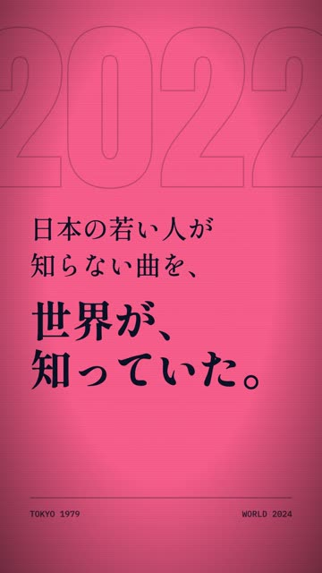
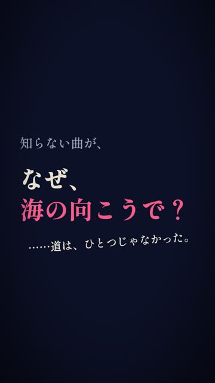

上：見本Genspark／下：今回（同じ時刻で比較）
サムネ用の1コマ（0〜1.07秒）
1.9s フック（拍でスラム＋RGBずれ）
3.9s 色反転「世界が、知っていた。」

5.0s 洋：世界1位。
8.9s 8分音符で歌い直した4人
11.4s 問いで止める

12.9s 表紙＋CTA
音源の波形（拍を解析した実物）
実測（Playwright getBoundingClientRect）: ロゴ img 450×450px（x=315,y=735・t=13.4s）／サムネ文字「世界1位。」 813×640px・font-size 320px（t=0.5s） 実測（ffprobe）: Duration 00:00:15.00・1080x1920・30fps・h264 yuv420p・aac 44100Hz stereo 実測（beats.json）: bpm 112.3・beat 0.5341s・phase 0.018s・28拍


| 確認項目 | 結果 |
|---|---|
| 尺 15.00秒・1080×1920・H.264+AAC（ffprobe実測） | yes |
| 0〜1秒にサムネ用の1コマ（世界1位。＋小さな一言） | yes |
| 拍に同期（beats.json 実測グリッド） | yes |
| 新ロゴのみ・450px・最後（実測450×450） | yes |
| 答えを書いていない（問いで止める） | yes |
| 事実はマガジン本文＋出典の範囲 | yes |
| レイ・ハラカミ版 | 作業中 |